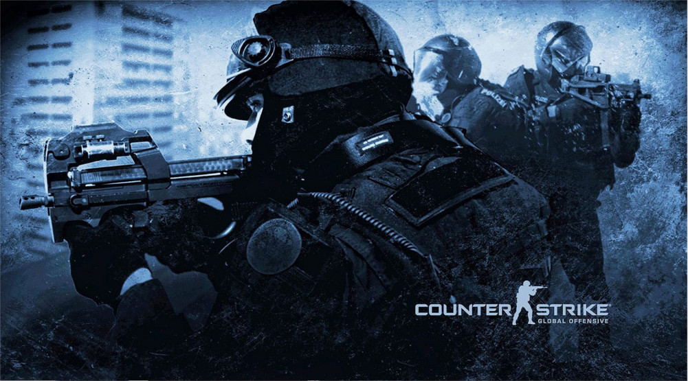
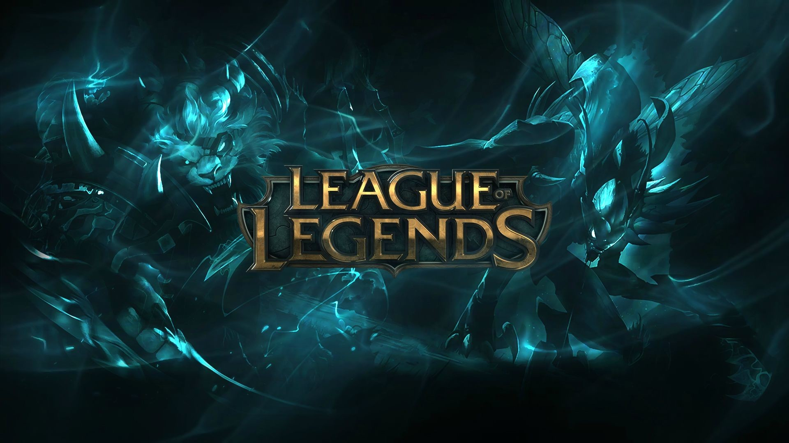

O TURNIEJU


- W turnieju „ACELAN” mogą wziąć udział osoby, które ukończyły 13 lat.
- Dodatkowo każdy z graczy zobowiązany jest do ukazania dowodu tożsamości.
- Drużyny zakwalifikowane do fazy ofline, zobowiązane są do wpłacenia wpisowego 150 zł na konto: 54 9351 0000 0013 2365 2000 0020 z dopiskiem Nazwy Drużyny oraz imię i nazwisko Kapitana.
- Przed wypełnieniem formularza rejestracyjnego uczestnicy zobowiązani są do zapoznania się z regulaminem turnieju „ACELAN”.
- Liczba drużyn jest ograniczona. O udziale w turnieju decyduje kolejność zgłoszeń poprzez wypełnienie formularza rejestracyjnego.
- Rejestracja do turnieju trwa w dniach 30.04-13.05.
- 14.05 na stronie www.acelan.acedu.pl i na fanpage’u podane zostaną drużyny, które zakwalifikowały się do fazy On-line.
- Turniej odbywać się będzie w dwóch fazach:
- I faza online – trwa od 28.05 do 06.06 drużyny mają rozegrać grę, przeciwko drużynie która zostanie im wylosowana.
- II faza offline- 8 drużyn spotka się w Augustowskim Centrum Edukacyjnym w Augustowie aby zawalczyć o I miejsce w turnieju.
- System turnieju to drabinka turniejowa.
- Więcej informacji w regulaminie Turnieju.